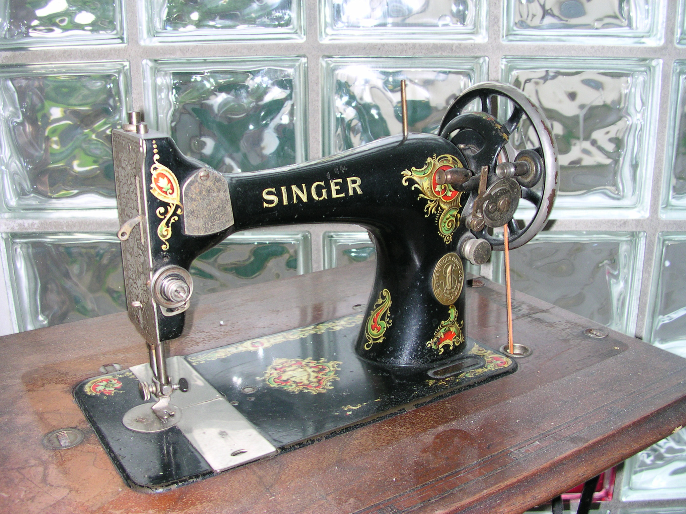

- Mesin Jahit Kayu Klasik (Gaya Singer) -
HARGA : RM 850
Warisan klasik yang membawa memori lama. Mesin jahit antik ini terkenal dengan rekabentuk elegan serta ketahanan yang masih dikagumi hingga kini.
"Khazanah Lama, Nilai Selamanya"
- Setiap Barang Mempunyai Cerita -

HARGA : RM 850
Warisan klasik yang membawa memori lama. Mesin jahit antik ini terkenal dengan rekabentuk elegan serta ketahanan yang masih dikagumi hingga kini.
"Khazanah Lama, Nilai Selamanya"